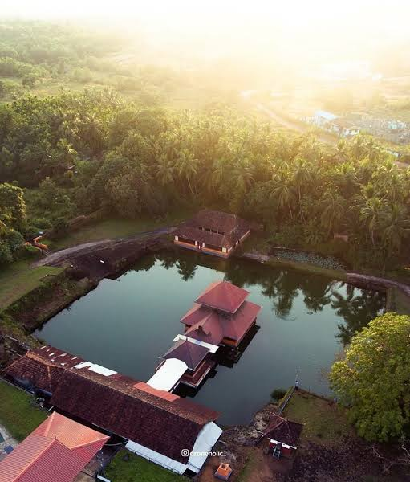
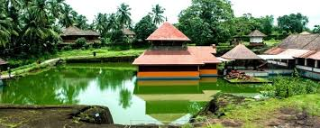

KASARGOD
Kasaragod formerly known in English as Kassergode, and Malayalam as Kanhirakode, is a municipal town and administrative headquarters of Kasaragod district of Kerala state in India. Established in the year 1966, Kasaragod was the first municipal town in Kasaragod district.
MALIK DEENAR JUMA MASJID
The mosque, Juma Masjid, which is one of the best kept and most attractive in the district, is located at Thalangara. Thalangara beach is on the western side of Kasaragod town and it is close to the railway station.Over the years, Kasaragod acquired the considerable importance as a centre of Islam on the west coast. It is the site of one of the mosques believed to have been founded by Malik Deenar. According to Qissat Shakarwati Farmad, the Masjids at Kodungallur, Kollam, Madayi, Barkur, Mangalore, Kasaragod, Kannur, Dharmadam, Panthalayini, and Chaliyam, were built during the era of Malik Dinar, and they are among the oldest Masjids in Indian Subcontinent. It is believed that Malik Dinar was died at Thalangara in Kasaragod town.
SRI ANANTHAPADMANABHASWAMY TEMPLE
Ananthapadmanabhaswamy Temple or Anantha Lake Temple is a Hindu temple built in the middle of a lake in the little village of Ananthapura, around 6 km from the town of Kumbla in Manjeshwaram Taluk of Kasaragod District of Kerala, South India. This is the only lake temple in Kerala and is believed to be the original seat of Ananthapadmanabha Swami Thiruvananthapuram. Legend has it that this is the original site where Ananthapadmanabha settled down. The lake in which the Sanctum Sanctorum is built measures about 2 acres. An interesting spot to keep in mind while visiting the temple is a cave to the right corner of the lake. According to the local legend, the deity Anantha Padmanabha chose to go all the way to Thiruvananthapuram through that cave. Hence both the places retain similar names, in spite of being on either end of the region. The current priests are Havyaka Brahmins, however the tantri belongs Shivalli Brahmin community


